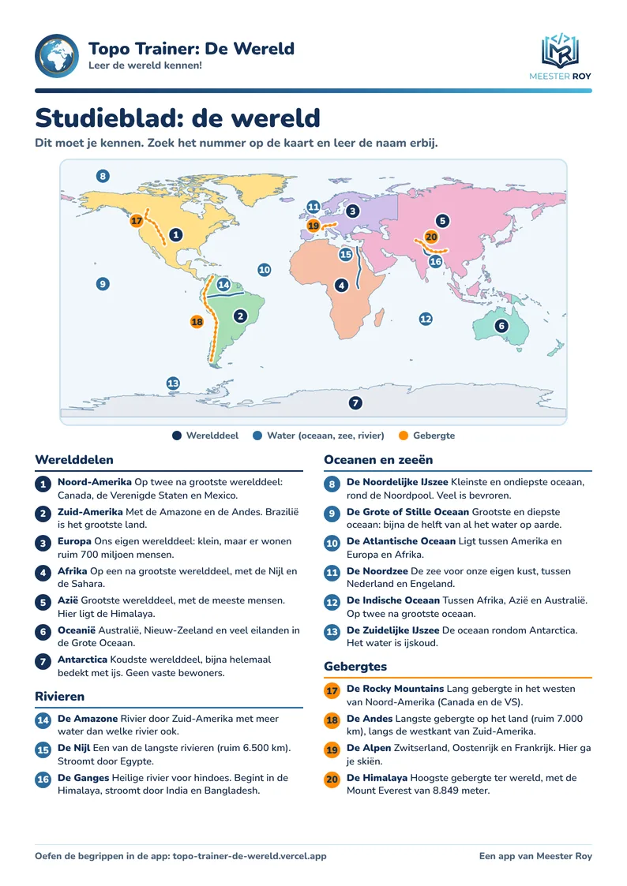
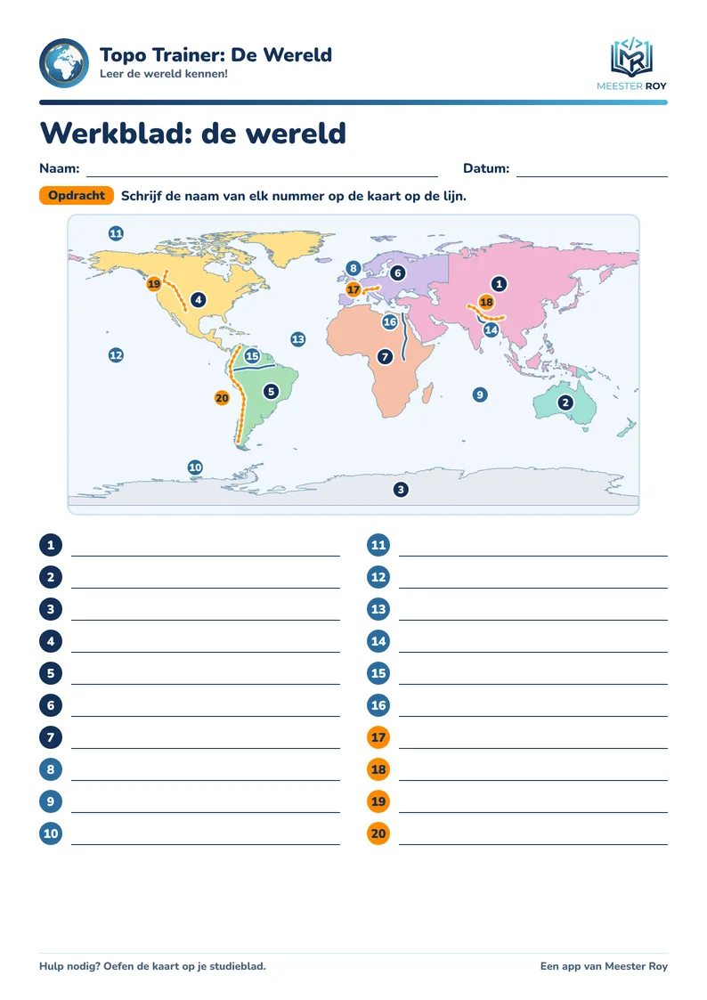

Studieblad en werkblad

Studieblad
Alle 20 begrippen op één A4: de kaart met nummers en bij elk begrip uitleg. Handig om mee te studeren, op papier of op het scherm.
Het blad opent in een nieuw tabblad. Daar druk je het af met de printknop van je browser.

Werkblad
Een kaart met 20 nummers. Schrijf de namen op de lijnen en controleer met je studieblad.
Het blad opent in een nieuw tabblad. Daar druk je het af met de printknop van je browser.